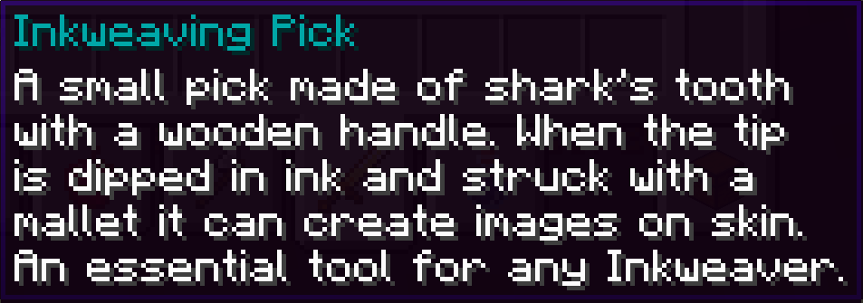

Thanks to our plugins, crafting on BWRP isn't limited to vanilla recipes. While certain custom items exist as items to be made in a crafting table or other workstation, there's also a near-limitless assortment of items that can be made via roleplay. From wooden statuettes to home-cooked meals, if you can think it, you can probably make it! Players have been known to make ornate weaponry, delicious cookies, and even items with lore to represent custom skins! All of that and more is available through crafting roleplay.
When you want to craft something simple that isn’t available in vanilla Minecraft or our custom recipes, it’s always a good idea to reach out to the staff.
If you're looking to add some descriptive text to an item you already have a Community Moderator can help with that. If you're looking to invent, mastercraft or do anything beyond adding descriptive text you'll want a Storyteller.
It is generally best to ping the CM team in the Discord rather than sending a specific moderator a private message as if they're around they'll be able to respond quickly, however everyone should feel comfortable speaking with a CM one on one to schedule a time to get together if you find them out of sync with your own schedule. For masterful crafts or items that require custom models, a Storyteller is required, and private messaging one right away is better than pinging the whole team, unlike the CMs.
As you’re preparing for some crafting roleplay, one thing you can do is write up some suggested lore beforehand. For example, if you want to craft a wooden staff with a name carved into it, try writing the lore yourself and send it to the staff member helping you with this crafting. Even if the lore ends up being changed by the CM or ST, they’ll appreciate having something to work with and consider the pre-written lore a polite gesture. It also cuts down on the time it takes inputting commands so that you can get your cool item sooner!
One extra step you can do that really helps the staff working with you is to split the lore you write up into proper commands that can be copied and used in-game. When you’re working on this, it’s important to make sure your lore is simple (not too long), squared (not one long line of text that goes off-screen), and formatted (no excessive bold letters, and adding some color).
Here is an example of prepared lore using the proper commands:
/ie rename &3Inkweaving Pick
/ie lore add &fA small pick made of shark’s tooth
/ie lore add &fwith a wooden handle. When the tip
/ie lore add &fis dipped in ink and struck with a
/ie lore add &fmallet it can create images on skin.
/ie lore add &fAn essential tool for any Inkweaver.
Which, would come out looking something like this:

Here is a link to the Minecraft color codes you can use in your lore.Any time you want to craft a fun item, make sure to have the necessary tools and resources needed to make it, as well as an item that a CM can use to add lore to. For example, if a blacksmith wants to make a longsword with a gemstone on the hilt, they can make the longsword with our custom crafting recipe and give that and the designated gem to the CM. The longsword will be given the appropriate lore, and the gemstone item will be consumed!
Please also understand that not every item you craft will have a fun custom model. For many things, the theater of the mind is the best way to represent a ship in a bottle or a handmade doll. So long as your lore is creative and the item for the lore is good enough, anything you make can be exciting and unique!
However, if you have a really cool idea in mind for an item that COULD be made into something mechanical, you can and should work with the Storytellers to get that worked out. We haven’t always had the various weapons and fun items we have today, many of them came from players crafting awesome stuff and getting it turned into an even cooler custom item or mechanic!
How the actual roleplay of crafting RP works is generally going to vary between each Community Moderator, Storyteller, and even different players. The most typical form of crafting RP involves the player/s emoting their work while the CM/ST adds the lore to their designated item. For very basic items that your character would absolutely be able to make, not much will be required from the RP itself. However, a large project will likely require some more intensity and focus. However, don’t feel like you have to do everything flawlessly.
At the end of the day, most of us on BWRP aren’t skilled blacksmiths, leatherworkers, or otherwise. We don’t know all of the hard labor and research and mastery that goes into making a sword or carving a statue. Crafting roleplay is meant to be a fun way of showing off your character’s skills, not a tool for moderators to torture you.
When you want to take the roleplay beyond simple crafting, such as a masterwork or a magical staff, that’s when the STs can come in to work with you. Going on adventures, hosting small RP events, and gathering nice resources may very well culminate in assembling your Staff of the Archmage or Godslayer sword!